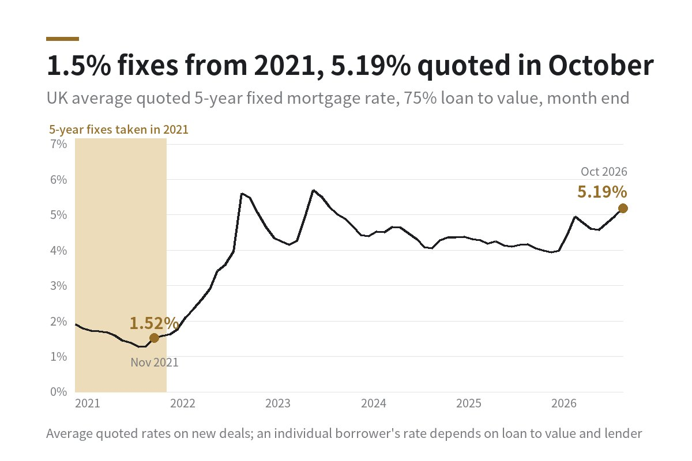

英国の住宅ローン650万件、返済額が上がる見通し
イングランド銀行は11月26日の金融安定報告で、2029年末までに金利を見直す英国の持ち家向け住宅ローンのうち約650万件で返済額が上がると見込んだ。今後3年で固定期間が終わる典型的な借り手の月返済の増加幅は中央値で約100ポンドと、7月の見通しの2倍だ。2021年11月に1.52%で5年固定にした20万ポンド（25年返済）のローンを10月の平均提示金利5.19%で組み直すと、月に約310ポンド増える。

2029年末までに650万件
英国の持ち家向け住宅ローン約900万件のうち、約700万件が2026年6月から2029年12月に金利を見直す。英国の中央銀行イングランド銀行（Bank of England）は11月26日の金融安定報告で、そのうち約650万件で返済額が上がり、約35万件で下がると見込んだ。7月報告の約600万件から50万件増えた。返済額が増える理由には固定期間の終了を挙げ、変動金利ローンも同じ計算に含めている。賃貸用（buy-to-let）ローンと残高1,000ポンド未満のローンは対象外だ。
今後3年で固定期間が終わる典型的な借り手なら、月返済は中央値で約100ポンド、約131ドル増える見込みだ。7月の見通しの約2倍になる。2023〜2024年に借り換えた人の増加幅の中央値は200ポンドをわずかに下回っていた。イングランド銀行は、650万件の大半がすでに2022年以前よりかなり高い金利で一度借り換えていると説明した。
この見通しは、11月18日時点の市場金利（OISカーブ）が示す水準で借り換えると置いた計算だ。本記事は一般的な情報であり、税務・法律・金融の助言ではない。実際の金利と返済額はローンの条件や銀行によって異なる。
2022年より前に固定したローンは上げ幅が大きくなりうる

英国で固定金利を選んだ借り手は、固定期間が終わると新しい商品に借り換える。金利上昇の影響は、古い契約が終わる日にまとめて来やすい。イングランド銀行のデータベースによると、借入比率75%の5年固定の平均提示金利（月末）は2021年を通じて1.28〜1.92%、2021年11月は1.52%だった。2026年10月は5.19%で、2023年9月（5.24%）以来の高さだ。7月末と比べると2年固定は4.79%から5.39%へ、5年固定は4.58%から5.19%へ、それぞれ約0.6ポイント上がった。
イングランド銀行が示した数字ではなく、一つの例で計算してみる。2021年11月に20万ポンドを25年の元利均等返済で借り、1.52%で5年固定にした場合、月返済は801.75ポンドだ。5年後に残る16万5,835ポンドを残り20年、5.19%で組み直すと1,111.92ポンドになる。月に約310ポンド（約406ドル）増え、月返済は39%上がる。下の計算機に自分の数字を入れられる。
イングランド銀行によると、いま3%未満の金利で借りている100万世帯余りが2027年10〜12月期までに金利を見直す。その頃にはこうした低金利ローンの大半が借り換えを終えている。
延滞はまだ長期平均の近く
イングランド銀行は、圧力がまだ大きな延滞にはつながっていないとみる。残高の2.5%超を延滞している住宅ローンは約0.8%で、長期平均の近くだ。家計債務は所得の約130%と2000年以降の平均153%を下回り、家計の現金保有は所得の約140%ある。ただし元利返済の負担は長期平均の水準まで戻り、さらに上がる見通しだ。延滞の指標は過去を映す数字のため、最近の金利上昇の影響がまだ十分に表れていない可能性があるとも付け加えた。
同じ報告には銀行側の数字もある。英国の大手銀行は7〜9月期に自社株買いと配当で株主に92億ポンドを還元した。これとは別に、金融政策委員会は大手銀行の中核的自己資本（Tier 1）の要件を平時にリスク加重資産の約0.5ポイント分引き下げる案を示し、貸し出し余力が広がるとした。所得の4.5倍以上を借りる新規ローンを全体の15%以内にとどめる勧告も同じ記録に載っている。
韓国は新規ローンの多くが変動金利
韓国は仕組みが異なる。韓国銀行の統計では、10月に銀行が新たに貸し出した住宅ローンのうち金額ベースで固定金利は38.1%、変動金利は61.9%だった。残高全体では固定金利が60.5%を占める。
韓国の変動金利の住宅ローンは通常、契約で決めた見直し日にCOFIX（銀行の資金調達コスト指数）などの指標に沿って金利が変わる。韓国銀行は11月26日に政策金利を3.25%に引き上げ、これが指標に反映されると、変動金利の借り手は次の見直し日に返済額が変わる。英国の政策金利は11月5日に4%に上がったが、影響は固定期間の終わりに集中し、韓国の変動金利の借り手は見直し日ごとに分けて受ける傾向がある。
変数は市場金利
イングランド銀行の650万件と100ポンドは、固定期間が終わるローンはその時の市場金利が示す固定金利で借り換え、変動金利ローンは市場金利の変化に沿うと置いた計算だ。市場金利が下がれば増加幅は縮み、上がれば広がりうる。
エネルギーショックが長引く不利なシナリオでは、家計全体の元利返済に生活必需費を加えた負担比率が16%近くまで上がり、世界金融危機以降で最も高くなりうるとした。それでも当時の山より約2.5ポイント低い。2027年末までに借り換える低金利の借り手が組み直す金利が、650万件と100ポンドという見通しを左右しうる。
固定期間が終わり金利を見直したときの月返済の変化
月返済の増加額ポンド
毎月同じ額を返す元利均等返済を前提にした参考値。金利は0より大きくする。手数料、利息のみのローン、銀行ごとの計算方法は含まない。
資料
- イングランド銀行、金融安定報告 2026年11月（2026.11.26、英語） （新しいタブで開きます）
- イングランド銀行、金融政策委員会記録 2026年11月（英語） （新しいタブで開きます）
- イングランド銀行データベース、IUMBV42・IUMBV34 固定金利住宅ローン提示金利（借入比率75%、英語） （新しいタブで開きます）
- イングランド銀行、政策金利（英語） （新しいタブで開きます）
- 韓国銀行ECOS、預金銀行の固定・変動金利貸出比率（新規、韓国語） （新しいタブで開きます）
- 韓国銀行ECOS、預金銀行の固定・変動金利貸出比率（残高、韓国語） （新しいタブで開きます）
- 韓国銀行連合会、COFIX公示（韓国語） （新しいタブで開きます）
- 韓国銀行、通貨政策方向（2026.11.26、韓国語） （新しいタブで開きます）